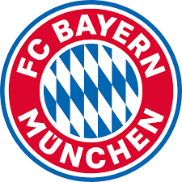

O Real Madrid Club de Fútbol, da cidade espanhola de Madri,
foi escolhido
o maior clube do século XX.

O inglês Manchester United FC, time de Bobby Charlton, George Best,
entre outros, foi o responsável por contar com diversos craques no país
que inventou o futebol.

Os alemães do Bayern de Munique neste período venceram por três vezes
consecutivas a Liga dos Campeões, 16 vezes a Bundesliga, uma vez a Copa Intercontinental,
uma vez a Copa da UEFA e uma Recopa Europeia.

De 1900 até 2000 o Barça conquistou 1 Liga dos Campeões, 24 Copas do Rei, 16 vezes o
Campeonato Espanhol, 2 Supercopas Europeias e 4 Recopas Europeias.